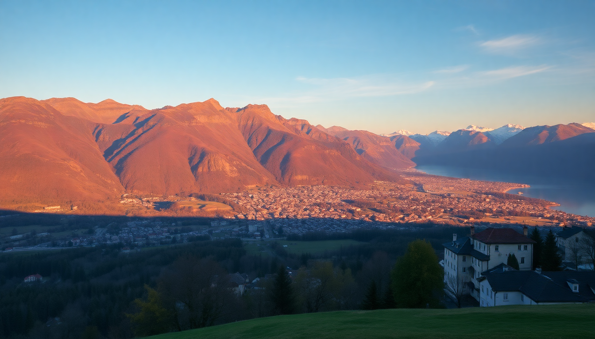

Best Time to Visit Switzerland: Seasonal Guide for the Alps

I’ve crisscrossed Switzerland four times now, and every season felt like a different country. The best time to visit depends entirely on what you want to do — ski Zermatt’s glaciers, hike the trails above Lucerne, or just sit in a Zurich café without paying peak-season rates. Here’s the breakdown by city and month, no fluff.
When is the best time to visit Switzerland for good weather?
If you want warm, sunny days without rain, book for June through August. That’s peak hiking weather in the Alps. I did the Eiger Trail near Interlaken in late June and had blue skies all week — but you’ll pay for it with crowded trains and hotel prices at the Hotel Schweizerhof in Lucerne hitting their annual high.
- June–August: 20–28°C in Zurich and Lucerne; cooler up in Zermatt. Perfect for the Jungfraujoch or a boat ride on Lake Lucerne.
- Late May and September: Shoulder months with fewer tourists. I walked the Chapel Bridge in Lucerne in mid-September without elbowing anyone.
- Winter (December–March): Snow guaranteed in Zermatt and Interlaken’s surrounding mountains. Zurich gets cold and grey — fine for museums and Christmas markets, not for alpine views.
Honestly, avoid November. It’s grey, rainy, and most cable cars are closed for maintenance. I learned that the hard way trying to get up to Klein Matterhorn.
When should I visit for skiing in Zermatt and Interlaken?
For reliable snow, January through March is your window. Zermatt’s glacier runs are open year-round, but the lower slopes need natural snow. I skied the Rothorn area in early March and had fresh powder every morning.
- Best months: January and February for deep snow; March for longer daylight and slightly warmer temps.
- Zermatt: The Matterhorn Glacier Paradise is open even in summer, but the village crowds thin out after Easter.
- Interlaken: Ski areas like Grindelwald-First and Kleine Scheidegg are best from mid-December to early April. I’d skip mid-December — it’s icy and expensive before Christmas.
One warning: school holidays in February (Sportferien) mean Zermatt’s slopes and the Hotel Monte Rosa fill up fast. Book lodging by November if you’re targeting that window.
What’s the cheapest time to visit Zurich and Lucerne?
April and October are your budget sweet spots. Flights into Zurich Airport drop, and you can find rooms at the Hotel Adler in Lucerne for half the July rate. I stayed at the Marktgasse Hotel in Zurich in late April for 180 CHF — that room goes for 350 in summer.
- April: Rainy but quiet. Most mountain lifts are still closed, but city walking and museum visits work fine.
- October: Harvest season. The foliage around Lake Lucerne is stunning, and the crowds have left. I did the Rigi round trip from Lucerne in mid-October with no queues.
- November: Cheapest of all, but miserable. Many restaurants in Zermatt close for two weeks, and the weather is flat-out bad.
Don’t expect sunny hiking in these months. Pack a rain jacket and plan for indoor activities like the Swiss Transport Museum in Lucerne or the Kunsthaus Zurich.
Is summer worth the crowds in Interlaken and Lucerne?
Yes, if you’re here for the outdoors. July and August are the only months you can reliably hike the higher trails without snow gear. I did the Harder Kulm trail above Interlaken in early August — clear views of the Jungfrau and Eiger all day.
- Crowds: Interlaken’s Höheweg is a zoo in August. Book the Hotel Victoria Jungfrau months ahead.
- Lucerne: The Lion Monument and Chapel Bridge are packed by 10 AM. Go at 7 AM — I did and had the bridge to myself.
- Water activities: Lake Lucerne swimming and paddleboarding are great in July. The water hits 22°C.
Downsides: prices peak, and thunderstorms roll in almost every afternoon. I got caught in a downpour near the Rigi summit in July — carry a shell jacket even on clear mornings.
What’s the best time for hiking near Zermatt and Interlaken?
Late June through early September is the hiking season. Snow melts by mid-June on most trails below 2,500 meters. I hiked the 5-Seenweg trail above Zermatt on July 1st — all five lakes were ice-free and the larch trees were bright green.
- Zermatt trails: The Europaweg and Höhenweg are best in August. Some sections stay snowy until July.
- Interlaken: The Schynige Platte trail opens in June. I did it in late June and needed microspikes for the first kilometer — check conditions at the Grindelwald tourist office.
- Lucerne: The Pilatus Golden Round Trip is a half-day hike that works from May to October. I’d avoid August weekends — the cable car queue hits 90 minutes.
If you’re fit and want fewer people, go in early September. The weather is still good, and the summer families have gone home.
How bad is winter in Zurich and Lucerne?
Winter is short, dark, and cold — but it has its charm. December brings Christmas markets, and January is dead quiet. I spent a week in Zurich in January and loved the lack of crowds at the Landesmuseum and the Niederdorf restaurants.
- Zurich: Christmas markets at Hauptbahnhof and Werdmühleplatz run through December 24. After that, the city goes quiet. The Hotel Storchen has great views of the Limmat in the snow.
- Lucerne: The Lucerne Christmas market on the Kapellplatz is small but cozy. Most lake cruises stop running in November.
- Zermatt: Winter is the main season here. The village is lively, and the slopes are packed from late December through February.
Downside: daylight ends by 4:30 PM in December. Plan indoor activities after 3 PM. I spent most January evenings in Zurich’s bars around Langstrasse — it’s not a nature trip in winter.
FAQ
Is Switzerland expensive year-round, or are there cheap months? It’s always expensive, but April and October cut costs by 30–40% on hotels and flights. I paid 120 CHF for a double at the Hotel Continental in Lucerne in late April — same room was 280 in July. Food and train tickets stay high regardless.
Can I visit the Matterhorn in October? You can see it, but the Gornergrat Railway and Matterhorn Glacier Paradise run on reduced schedules. I went in mid-October and the last cable car down was at 3:30 PM. Snow on the viewing platforms is common. Bring goggles and gloves.
Which month has the least tourists in Interlaken? Late April and early November. April has muddy trails and closed lifts, but the town is empty. November is worse weather-wise but even quieter. I had the Harder Kulm funicular almost to myself in late April — just check opening dates online first.
Conclusion
- For skiing: Go January–March to Zermatt; book accommodation by November.
- For hiking: June–September in Interlaken and Zermatt; September is the sweet spot for fewer crowds.
- For budget: April and October in Zurich and Lucerne; skip November entirely.
- For Christmas markets: December in Zurich and Lucerne, but expect peak prices in Zermatt.
- For solitude: Late April in Interlaken or January in Zurich — just bring good rain gear and a flexible attitude.